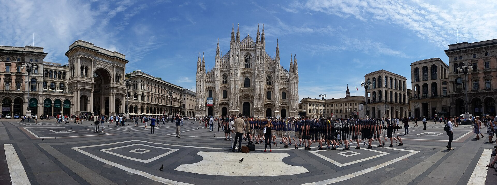
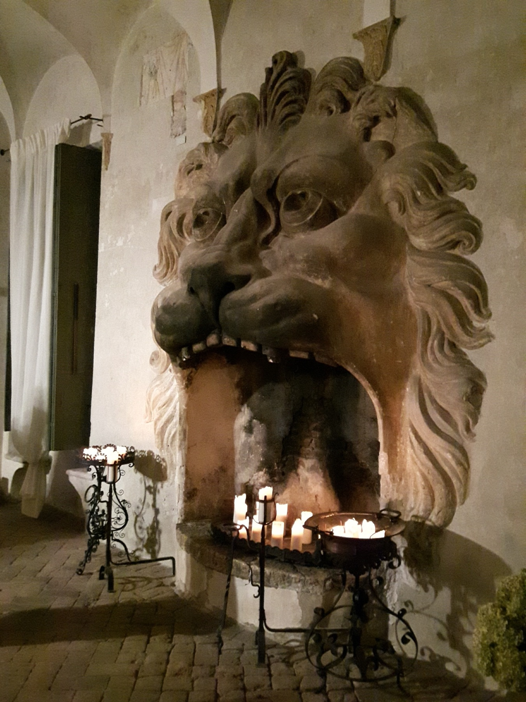
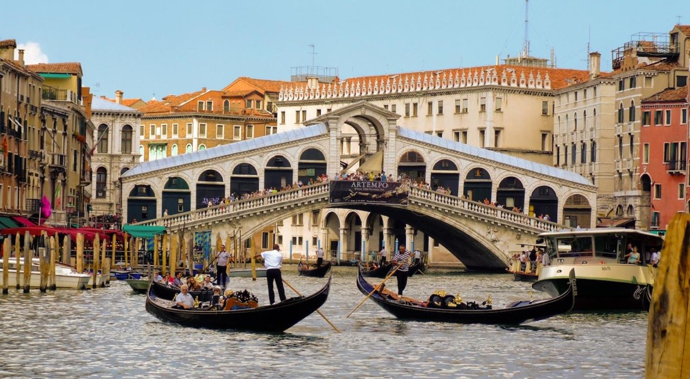

M1 · 舒适平衡版首推
东岸 Sicily × Milan × Veneto
把最有戏剧感的海岛、时尚城市和家门口的成熟日游做完整，不再增加第三个过夜延伸。
- 外宿
- Taormina 2 + Ortigia 3 + Milan 2
- 搬酒店
- 3处外宿基地
- 工作兼容
- 高；周末承接长日游
- 最大取舍
- 没有 Florence / Dolomites
Route board 01 · Milan fixed
两个方案都保留 Sicily、Venice 与 Amarone，也都保护工作日上午；较长活动集中到周末。区别只有一个：是把余量留给家附近与一家人的体力，还是再加入 Florence，形成一条更完整、也更紧凑的 Grand Tour。
先看两张摘要；点开方案，才进入每天的行动表。



Sicily现已确定为9/17–23西线：Trapani 3晚＋Cefalù 3晚。本页保留用来回看当时的取舍，不再代表当前行程。打开当前西线逐日计划 →
ARCHIVED OPTIONSSicily 与下一段陆路旅行之间，安排 Torreglia 洗衣、补给、重装小行李。M2 只保留一次例外：Sicily 直接飞 Milan，因为 9/24 是固定节点；随后先回家，再去 Florence。
HOME RESET RULE两个方案都成立；选的是旅行性格，不是“正确答案”。M1更适合全家执行，M2用更高移动量换一段Florence。
把最有戏剧感的海岛、时尚城市和家门口的成熟日游做完整，不再增加第三个过夜延伸。
Arab-Norman Sicily、地中海海岸、米兰与文艺复兴全部出现，是四套里文化横截面最宽的一套。



最像“住在意大利，再出去旅行”：大段外宿之间回家，最后四晚稳稳落在Torreglia。
Trade-off：不加Florence；换来更稳的工作节奏、两个完整必去日游和离境前缓冲。
打开15天安排四人的共同体验最好。 Taormina、Ortigia、Milan、Venice与Amarone都各自有清楚章节，没有哪一段只是为了赶路。
Sicily只换一次酒店；Etna不作为硬锚点。若火山、道路或天气不稳，用Noto＋Vendicari完成同等有层次的一天。
不把抵达日伪装成观光日。
航班时刻决定当天，不追加古剧场。
这是西西里内部唯一一次换酒店。
不把Etna当保证项目，也不把Noto、海滩、火山全塞进同一天。
这晚不约餐厅、不追加景点；没有合适航班就前后微调西西里日期，不牺牲工作。
提前一晚入住，9/24不承担任何城际交通风险。
三条只选一条做主线；邀请制秀场不写进骨架。
安排包车或明确一位不饮酒司机。
熟客版本不追San Marco清单；室内可选San Rocco、Peggy或Mocenigo。


从Palermo的Arab-Norman文明到Milan，再回家洗衣，最后以Florence收束。
Trade-off：文化层次最丰富，但也是移动最多的一套；Florence只有两晚，不能再加Val d’Orcia。
打开15天安排西线本身靠Palermo文明与Cefalù海岸成立，电影感只负责加深记忆。 海风、石墙与旧城光影可以cue《西西里的美丽传说》，但这里是托纳多雷式意境，不误写成电影实拍地。
9/23从Sicily直接飞Milan，是为了守住9/24固定日；9/25先回Torreglia洗衣和复位，9/26才重新出发去Florence。
包车或指定不饮酒司机；不赶两家酒庄。
这是西线成立的文化核心；电影气质留给Palermo街头与Cefalù黄昏，不另外追取景地。
这是电影气质的呼应，不把Cefalù误标成《西西里的美丽传说》实拍地。
这是全程唯一一次“旅行地直接接旅行地”，目的是确保9/24已经在米兰。
只选一条主线；时装周是城市氛围，不依赖秀票。
不在返家路上顺插景点。
一座馆、一片城区、一顿好饭。
若全家更想看艺术，把这天换成Pitti / Boboli；不要两边都做。
必须回家过最后一晚，不把国际离境押在城际转场上。
M1更符合四人、工作上午与回家复位的节奏。只有当大家明确愿意用两晚Florence换掉家中的缓冲，才选择M2；不要在M2之上继续加Como或Dolomites。
这是路线决策稿，不是已出票行程。航班、酒庄、博物馆与司机需按最终日期和取消条款锁定。